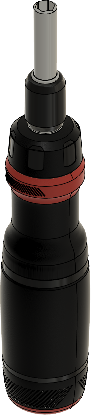

ESTUDIO DE PRODUCTO
Destornillador CRAFTSMAN
Explorá la forma del mango, el relieve del agarre y el encastre del portapuntas.

Del objeto al modelo.
Estudio de un destornillador CRAFTSMAN modelado en Autodesk Fusion. Arrastrá sobre el modelo para verlo desde otro ángulo. Para acercarte al detalle del mango, usá la ruedita o ampliá con dos dedos.